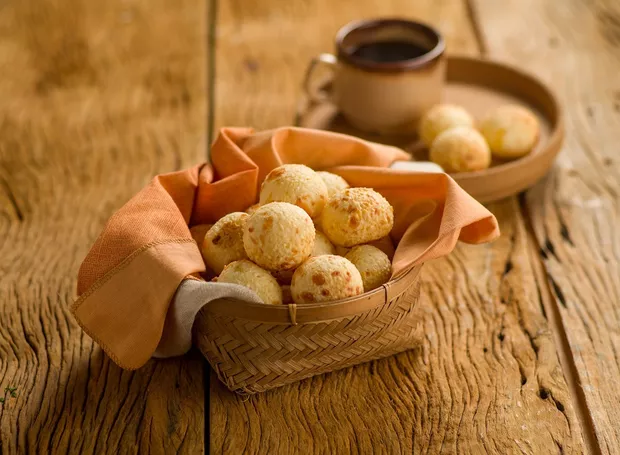
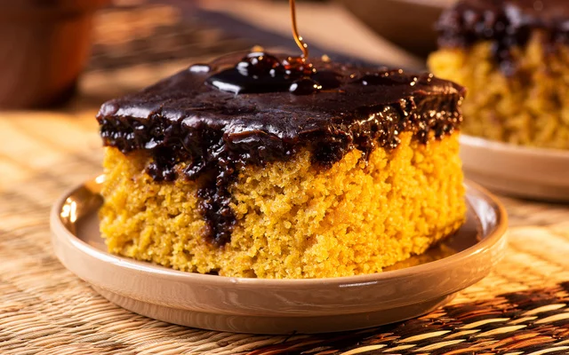
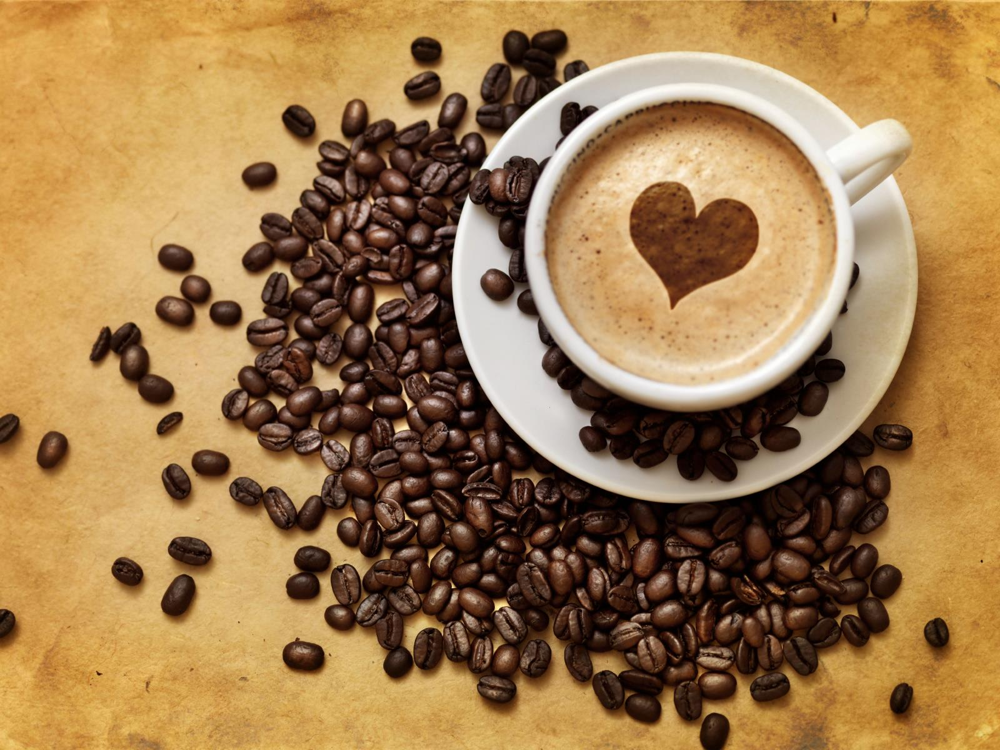

Inície o seu Dia com aquele belo Café

Comece o seu dia com o aroma envolvente e o sabor inconfundível do Café Prime. Cada xícara é preparada com grãos selecionados, torrados na medida certa para proporcionar uma experiência única desde o primeiro gole. Perfeito para despertar a mente, renovar as energias e transformar sua manhã em um momento especial. Porque um grande dia começa com um café verdadeiramente extraordinário.
Ótima sujestão para combinar com seu Café do dia!

Pão de Queijo
Nada combina melhor com um café quentinho do que um delicioso pão de queijo recém-assado. Crocante por fora, macio por dentro e com aquele sabor irresistível de queijo derretendo a cada mordida. Preparado com ingredientes selecionados e muito carinho, o pão de queijo do Café Prime é perfeito para acompanhar sua pausa, tornar sua manhã mais especial ou simplesmente transformar qualquer momento em uma experiência aconchegante e saborosa.

Bolo de Cenoura
O clássico bolo de cenoura que traz conforto e sabor em cada pedaço. Macio, fofinho e preparado com ingredientes selecionados, ele ganha um toque especial com a irresistível cobertura de chocolate que derrete suavemente a cada mordida. Perfeito para acompanhar seu café e tornar seu momento ainda mais delicioso, o bolo de cenoura do Café Prime é aquele sabor caseiro que transforma qualquer pausa em uma experiência doce e inesquecível.

Café do Dia
Descubra o sabor especial do nosso Café do Dia. Selecionado cuidadosamente para oferecer uma experiência única, cada xícara traz aromas marcantes e um sabor equilibrado, perfeito para acompanhar qualquer momento. Seja para começar a manhã com energia ou fazer uma pausa durante o dia, o Café do Dia do Café Prime é sempre fresco, encorpado e preparado com todo o cuidado para tornar sua experiência ainda mais especial.